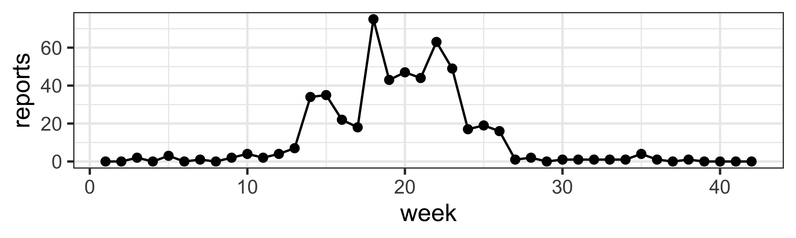
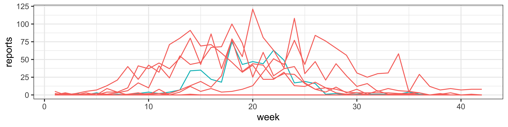
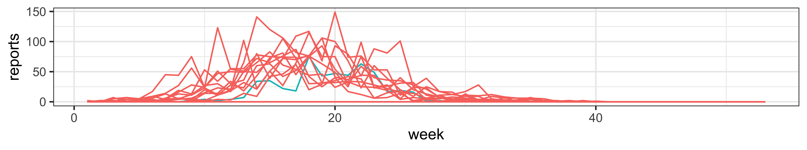
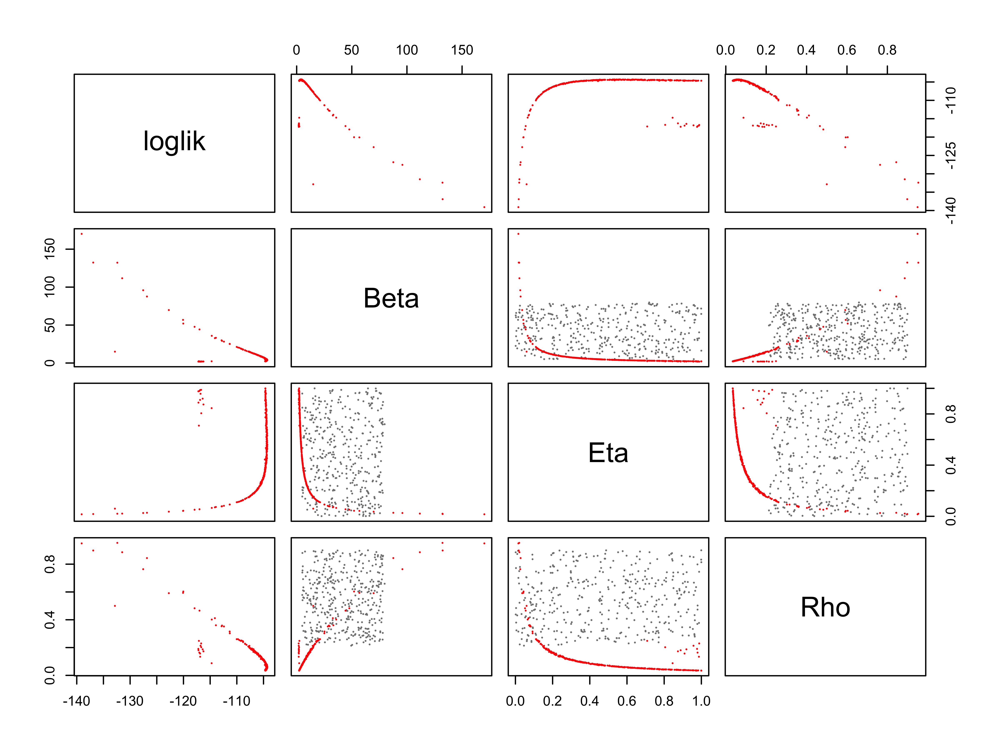
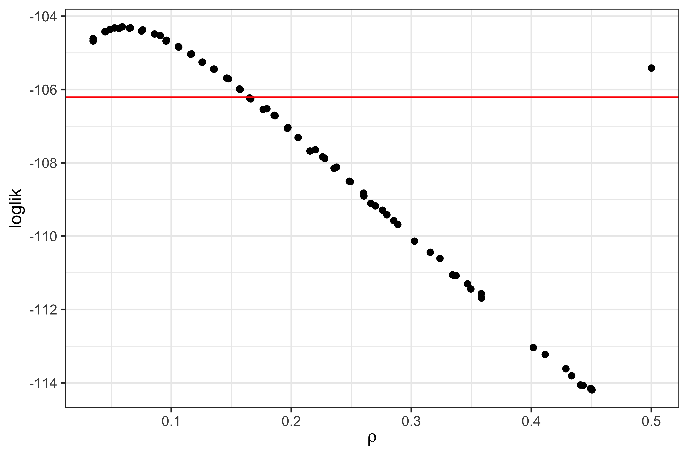

library(tidyverse)
read_csv("Measles_Consett_1948.csv") |>
select(week,reports=cases) |>
filter(week<=42) -> meas
meas |> as.data.frame() |> head(n=3) week reports
1 0
2 0
3 2pomp
library(tidyverse)
read_csv("Measles_Consett_1948.csv") |>
select(week,reports=cases) |>
filter(week<=42) -> meas
meas |> as.data.frame() |> head(n=3) week reports
1 0
2 0
3 2meas |>
ggplot(aes(x=week,y=reports)) +
geom_line() + geom_point()
pompsir_stoch <- Csnippet("
double dN_SI = rbinom(S,1-exp(-Beta*I/N*dt));
double dN_IR = rbinom(I,1-exp(-Gamma*dt));
S -= dN_SI; I += dN_SI - dN_IR;
R += dN_IR; H += dN_IR;"
)
sir_init <- Csnippet("
S = nearbyint(Eta*N);
I = 1;
R = nearbyint((1-Eta)*N);
H = 0;"
)dmeas <- Csnippet("lik = dnbinom_mu(reports,k,Rho*H,give_log);")
rmeas <- Csnippet("reports = rnbinom_mu(k,Rho*H);")
meas |>
pomp(
times="week",t0=0,
rprocess=euler(sir_stoch,delta.t=1/7),
rinit=sir_init, rmeasure=rmeas,
dmeasure=dmeas, accumvars="H",
statenames=c("S","I","R","H"),
paramnames=c("Beta","Gamma","Eta","Rho","k","N"),
params=c(Beta=15,Gamma=0.5,Rho=0.5,k=10,Eta=0.06,N=38000)
) -> measSIRmeasSIR |>
simulate(nsim=20,format="data.frame",include.data=TRUE) |>
ggplot(aes(x=week,y=reports,group=.id,color=.id=="data")) +
geom_line() + guides(color="none")
Evaluate the likelihood and Effective Sample Size (ESS) of the initial parameter estimates using particle filtering
pf <- measSIR |> pfilter(Np=5000)
min(pf@eff.sample.size)[1] 257.6704ESS refers to the number of particles that effectively contribute to the approximation of the posterior distribution.
plot(pf)
Use repeated particle filtering to refine estimates
foreach(i=1:10,.combine=c,
.options.future=list(seed=TRUE)) %dofuture% {
measSIR |> pfilter(Np=5000)
} -> pf
pf |> logLik() |> logmeanexp(se=TRUE) -> L_pf
L_pf est se
-131.9353474 0.7995475 Then we get likelihood at a single point. Store this point, together with the estimated likelihood and SE:
pf[[1]] |> coef() |> bind_rows() |>
bind_cols(loglik=L_pf[1],loglik.se=L_pf[2]) |>
write_csv("measles_params.csv")foreach(i=1:20,.combine=c,
.options.future=list(seed=482947940)) %dofuture% {
measSIR |>
mif2(
Np=2000, Nmif=50, cooling.fraction.50=0.5,
rw.sd=rw_sd(Beta=0.02, Rho=0.02, Eta=ivp(0.02)),
partrans=parameter_trans(
log="Beta",logit=c("Rho","Eta")
),
paramnames=c("Beta","Rho","Eta")
)
} -> mifs_localmifs_local |>
traces() |>
melt() |>
ggplot(aes(x=iteration,y=value,group=.L1,color=factor(.L1)))+
geom_line()+
guides(color="none")+
facet_wrap(~name,scales="free_y")
set.seed(2062379496)
runif_design(
lower=c(Beta=5,Rho=0.2,Eta=0),
upper=c(Beta=80,Rho=0.9,Eta=1),
nseq=400
) -> guesses
fixed_params <- c(N=38000, Gamma=2, k=10)
mf1 <- mifs_local[[1]]foreach(guess=iter(guesses,"row"), .combine=rbind,
.options.future=list(seed=1270401374)
) %dofuture% {
mf1 |>
mif2(params=c(guess,fixed_params)) |>
mif2(Nmif=100) -> mf
replicate(
10,
mf |> pfilter(Np=5000) |> logLik()
) |>
logmeanexp(se=TRUE) -> ll
mf |> coef() |> bind_rows() |>
bind_cols(loglik=ll[1],loglik.se=ll[2])
} -> resultsThen get the best result
results |> filter(loglik==max(loglik))# A tibble: 1 × 8
Beta Rho Eta N Gamma k loglik loglik.se
<dbl> <dbl> <dbl> <dbl> <dbl> <dbl> <dbl> <dbl>
1 3.96 0.0602 0.562 38000 2 10 -104. 0.0273Again, we attempt to visualize the global geometry of the likelihood surface using a scatterplot matrix. Then plot contains both the starting values (grey) and the IF2 estimates (red).
read_csv("measles_params.csv") |>
filter(loglik>max(loglik)-50) |>
bind_rows(guesses) |>
mutate(type=if_else(is.na(loglik),"guess","result")) |>
arrange(type) -> allpairs(~loglik+Beta+Eta+Rho, data=all, pch=16, cex=0.3,
col=ifelse(all$type=="guess",grey(0.5),"red"))
The projections of the estimates give us `poor mans profiles’’:
all |>
filter(type=="result") |>
filter(loglik>max(loglik)-10) |>
ggplot(aes(x=Eta,y=loglik))+
geom_point()+
labs(
x=expression(Eta),
title="poor man's profile likelihood"
)
We first bound the uncertainty by putting a box around the highest-likelihood.
read_csv("measles_params.csv") |>
filter(loglik>max(loglik)-20,loglik.se<2) |>
sapply(range) -> box
box Beta Gamma Rho k Eta N
[1,] 1.824688 2 0.03405657 10 0.03628984 38000
[2,] 69.791919 2 0.60343428 10 0.99982180 38000
loglik loglik.se
[1,] -122.7423 0.01462075
[2,] -104.2847 0.56960880Within this box, we’ll choose some random starting points
freeze(seed=1196696958,
profile_design(
Eta=seq(0.01,0.95,length=40),
lower=box[1,c("Beta","Rho")],
upper=box[2,c("Beta","Rho")],
nprof=15, type="runif"
)) -> guessesplot(guesses)Now, we’ll start one independent sequence of iterated filtering operations from each of these points.
foreach(guess=iter(guesses,"row"), .combine=rbind,
.options.future=list(seed=830007657)
) %dofuture% {
mf1 |>
mif2(params=c(guess,fixed_params),
rw.sd=rw_sd(Beta=0.02,Rho=0.02)) |>
mif2(Nmif=100,cooling.fraction.50=0.3) -> mf
replicate(10, mf |> pfilter(Np=5000) |> logLik()) |>
logmeanexp(se=TRUE) -> ll
mf |> coef() |> bind_rows() |>
bind_cols(loglik=ll[1],loglik.se=ll[2])
} -> resultsread_csv("measles_params.csv") |>
filter(loglik>max(loglik)-10) -> all
pairs(~loglik+Beta+Eta+Rho,data=all,pch=16)
Focusing on the top of the surface
results |>
filter(is.finite(loglik)) |>
group_by(round(Eta,5)) |>
filter(rank(-loglik)<3) |>
ungroup() |>
filter(loglik>max(loglik)-20) |>
ggplot(aes(x=Eta,y=loglik))+
geom_point() + xlab(expression(eta))
Estimate \(\eta\) with 95% CI using these data
maxloglik <- max(results$loglik,na.rm=TRUE)
ci.cutoff <- maxloglik-0.5*qchisq(df=1,p=0.95)
results |>
filter(is.finite(loglik)) |>
group_by(round(Eta,5)) |>
filter(rank(-loglik)<3) |> ungroup() |>
ggplot(aes(x=Eta,y=loglik))+
geom_point() + xlab(expression(eta)) +
geom_smooth(method="loess",span=0.25)+
geom_hline(color="red",yintercept=ci.cutoff)+
lims(y=maxloglik-c(5,0))
results |>
filter(is.finite(loglik)) |>
filter(loglik>max(loglik)-0.5*qchisq(df=1,p=0.95)) |>
summarize(min=min(Eta),max=max(Eta)) -> Eta_ciThen we know \(\eta\) is in the 0.23–0.95% range (95% CI).
For the next parameter, we can initialize the IF2 computations at points we have already established have high likelihoods.
read_csv("measles_params.csv") |>
group_by(cut=round(Rho,2)) |>
filter(rank(-loglik)<=10) |>
ungroup() |>
arrange(-loglik) |>
select(-cut,-loglik,-loglik.se) -> guessesThen again, generate the profile likelihood
foreach(guess=iter(guesses,"row"), .combine=rbind,
.options.future=list(seed=2105684752)
) %dofuture% {
mf1 |>
mif2(params=guess,
rw.sd=rw_sd(Beta=0.02,Eta=ivp(0.02))) |>
mif2(Nmif=100,cooling.fraction.50=0.3) |>
mif2() -> mf
replicate(
10,
mf |> pfilter(Np=5000) |> logLik()) |>
logmeanexp(se=TRUE) -> ll
mf |> coef() |> bind_rows() |>
bind_cols(loglik=ll[1],loglik.se=ll[2])
} -> results

results |>
filter(loglik>max(loglik)-0.5*qchisq(df=1,p=0.95)) |>
summarize(min=min(Rho),max=max(Rho)) -> rho_ciThen we know reporting efficiencies \(\rho\) is in the 3.4–50% range (95% CI).
After all these analyses, we would like to visualize how exactly the model with the MLEs matches the data. We can do it by plotting the simulations with 95% the prediction interval.
read_csv("measles_params.csv") |>
filter(loglik == max(loglik)) |>
select(-loglik, -loglik.se) -> best.params
measSIR |>
simulate(
params=unlist(best.params),
nsim=1000, format="data.frame", include.data=TRUE
) -> simssims |>
mutate(data=.id=="data") |>
group_by(week,data) |>
reframe(
p=c(0.025,0.5,0.975),
value=wquant(reports,probs=p),
name=c("lo","med","up")
) |>
select(-p) |> pivot_wider() |> ungroup() |>
ggplot(aes(x=week,y=med,color=data,fill=data,ymin=lo,ymax=up))+
geom_line()+ geom_ribbon(alpha=0.2,color=NA) +
labs(y="reports")+
theme_bw() + guides(color="none",fill="none")
This lesson is prepared for the Simulation-based Inference for Epidemiological Dynamics module at the Summer Institute in Statistics and Modeling in Infectious Diseases, SISMID.
The materials build on previous versions of this course and related courses.
Licensed under the Creative Commons Attribution-NonCommercial license. Please share and remix non-commercially, mentioning its origin.
Produced with R version 4.3.2 and pomp version 5.10.
Compiled on 2024-07-24.